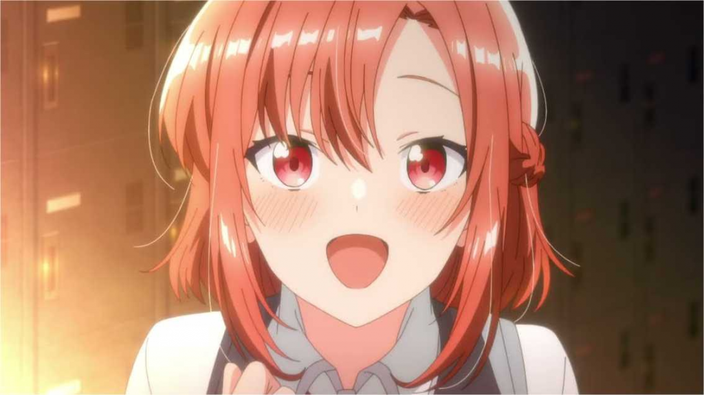

12 de Novembro, 2023
ANIME YURI - SASAYAKU YOU NI WO UTAU - GANHA TRAILER E É ADIADO
©Sasayaku You ni Koi wo Utau
No site oficial da adaptação para anime do mangá "Sasayaku You ni Koi wo Utau" (Whisper Me a Love Song) de Eku Takeshima, foi divulgado o primeiro vídeo promocional completo do projeto. O vídeo apresenta um trecho do tema musical "Humming Love", interpretado por SSGIRLS. Porém, também traz notícias sobre mudanças na equipe de produção e um adiamento na data de lançamento para a Temporada de Primavera de 2024 (abril-junho).
Inicialmente planejado para estrear durante a Temporada de Inverno de 2024 (janeiro-março), o projeto anunciou alterações na equipe e no cronograma sem explicar os motivos por trás dessas mudanças. A produção limitou-se a pedir desculpas pelos possíveis inconvenientes que essas decisões possam causar aos espectadores.
Sinopse:
Yori Asanagi é uma garota madura em muitos aspectos, mas ainda é pura quando se trata de romance. Esse sentimento é comprovado quando uma caloura, Himari Kino, de repente confessa seu amor por ela após a apresentação de sua banda na cerimônia de abertura do primeiro ano. Confusa e surpresa, Yori pede uma consulta às amigas, mas elas a provocam dizendo que ela está vivendo o amor. Yori logo se decide e tenta retribuir os sentimentos de Himari, mas em uma reviravolta, ela percebe que o que Himari amava não era ela, mas sua música! Sasayaku You ni Koi wo Utau gira em torno do relacionamento de Yori e Himari. Enquanto Yori continua perseguindo seu amor por Himari, ela promete fazer Himari se apaixonar por ela. No entanto, esse amor apaixonado florescerá ou permanecerá não correspondido?
Mais informações:
Akira Mano, conhecido por seu trabalho em séries como Tonikaku Kawaii, Asobi Asobase e Ghost Hunt, assume a direção do anime nos estúdios CLOUD HEARTS, substituindo Xinya Cai (Tensai Ouji no Akaji Kokka Saisei Jutsu, Magatsu Wahrheit: ZUERST). Além disso, os estúdios Yokohama Animation Lab estão envolvidos nessa produção. Hiroki Uchida (Gamers!, Shikkakumon no Saikyou Kenja, Schwarzesmarken) fica responsável pela escrita e supervisão dos roteiros. Minami Yoshida (Princess Connect! Re:Dive, Cider no You ni Kotoba ga Wakiagaru, Manaria Friends) assume o design de personagens e a direção de animação. A trilha sonora está a cargo de Hiroshi Sasaki (Hakushon Daimaou 2020, Tsugu Tsugumomo) e Wataru Maeguchi (Sugar Apple Fairy Tale Parte 2, Mob Psycho 100 III).
Eku Takeshima começou a serializar o mangá na revista Monthly Comic Yuri Hime da Ichijinsha em fevereiro de 2019, alcançando um total de 500.000 cópias em circulação. Além disso, Takeshima trabalhou no design de personagens para o anime Null Peta e tem outras obras publicadas como Kimi ni Suki tte Iwasetai (I would like to make you say love), Hare no Kuni no Appare-dan (Appare! Girls in Okayama) e Saiko Hunter Ryuu.
Fonte: Anime United